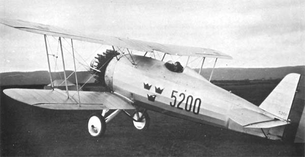
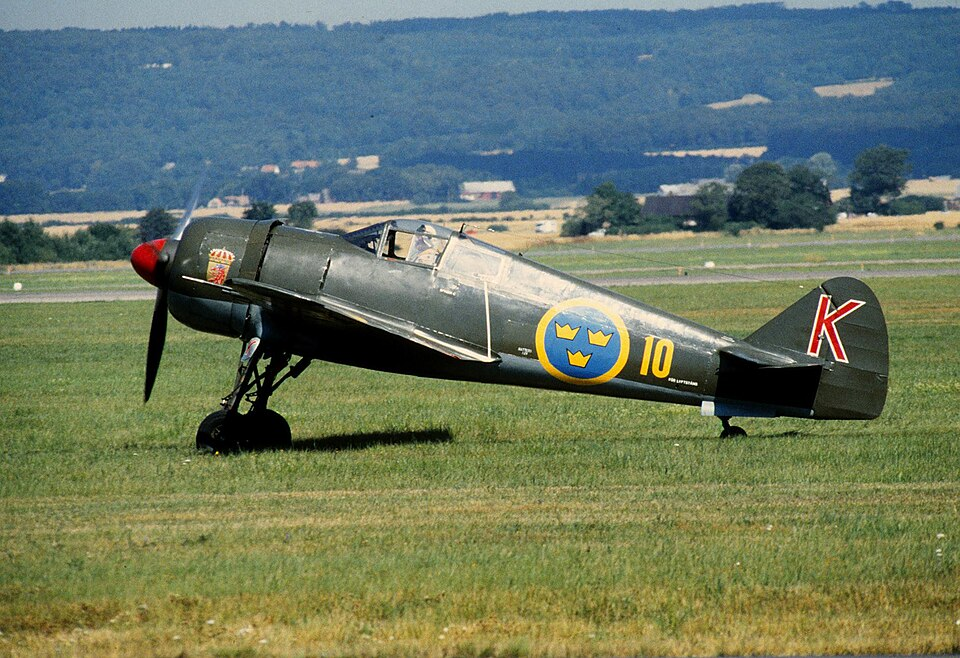
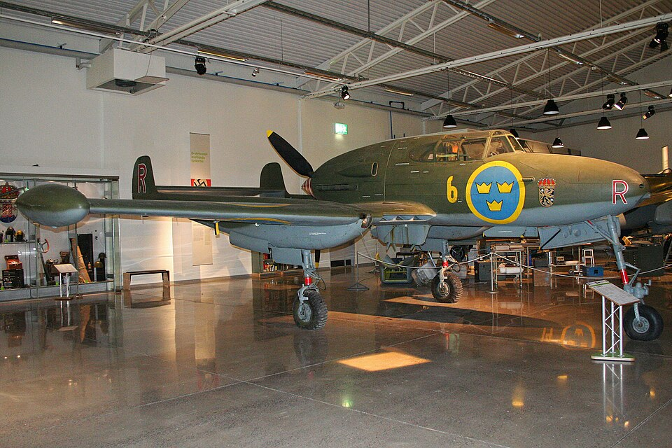
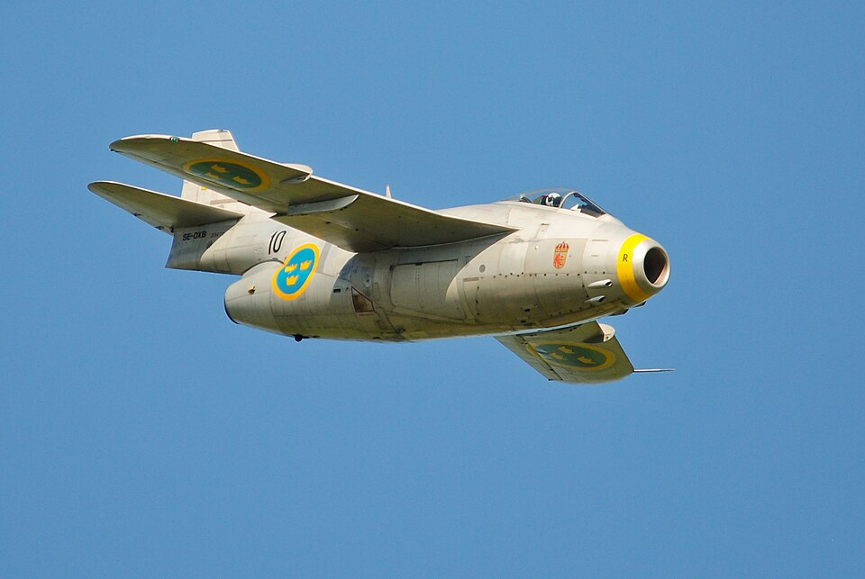
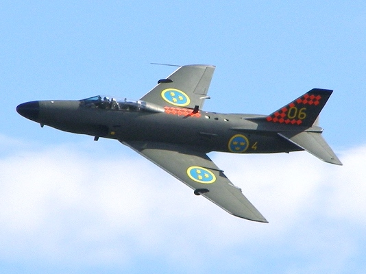
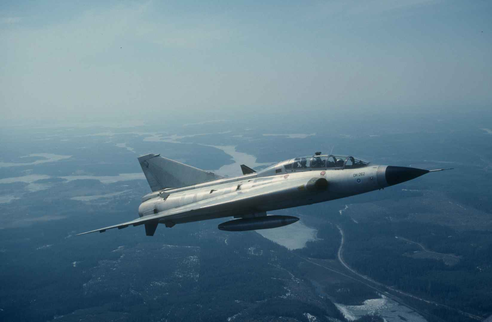
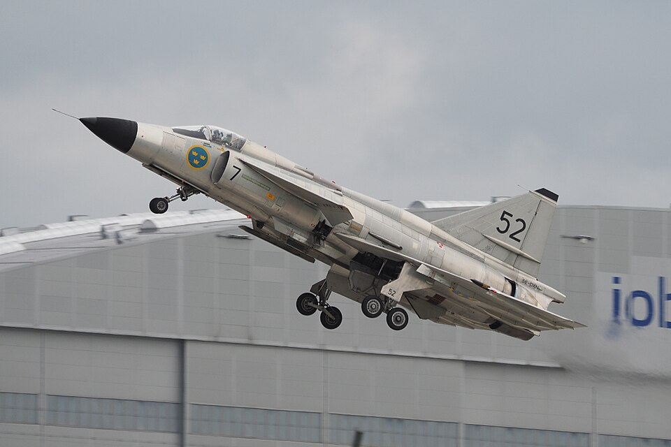
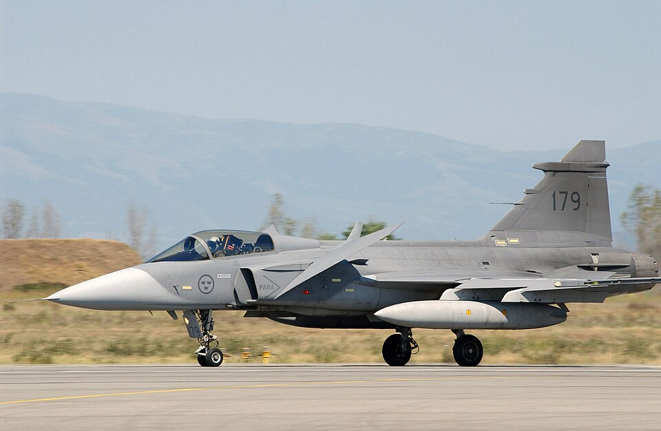

En resa genom svensk flyghistoria
Ett urval genom tiderna
Från propeller till Gripen
Ett urval genom tiderna

Svenska Aero SA-11 Jaktfalken var ett svenskt flygplan som användes mellan 1930 & 1945 som utvecklades av privata aktörer efter att det svenska flygvapnet inte hade lagt märke till projektet. Planet var imponerande under dess provflygning och myndigheterna köpte snabbt in prototypen.

FFVS J-22 var ett svenskt jaktflygplan som användes under andra världskriget fram till 1952. Det var metallbrist i Sverige under tiden och planet byggdes med ett skrov av trä och stål, och motorn kopierades av ett amerikanskt exemplar för att lösa motorbristen.

SAAB J-21 var ett mycket unikt jaktflygplan som användes mellan 1945 och 1954. Det byggdes med en propeller på baksidan av förarkabinen vilket gav piloten bättre sikt, men gjorde det livsfarligt att hoppa ut vid en krash. För att piloten inte skulle träffas av propellern blev J-21 därför ett av världens första flygplan utrustat med en katapultstol.

SAAB J-29 Tunnan var Sveriges första jetjaktflygplan och användes mellan 1951 och 1976. Det runda och breda utseendet berodde på den brittiska jetmotorn som krävde en tjock flygkropp. Tunnan var ett flygplan i världsklass och blev historiskt det första SAAB-planet att delta i riktig strid under FN-insatsen i Kongo på 1960-talet.

SAAB J-32 Lansen flög i flygvapnet mellan 1955 och 1997. Det var det första svenska flygplanet som designades helt med hjälp av datamaskiner för att klara av att bryta ljudvallen i en dykning. Lansen byggdes för att kunna bära på kärnvapen under det svenska atomvapenprogrammet, men slutade istället som en långlivad trotjänare.

SAAB J-35 Draken var ett jaktflygplan i världsklass under 1960-talet och flög enda fram till 1999. Med en dubbel-delta-vinge var den kapabel till att skjuta ner fientliga bombflygplan på mycket hög höjd och i dubbla ljudhastigheten. Den unika aerodynamiken gjorde det också till världens första stridsflygplan som kunde göra den beröma “Kobra manövern”.

JA-37 Viggen var ett avancerat stridsflygplan som användes av flygvapnet mellan 1971 och 2005. Utrustad med unika vingar och reverseringsbar motor för att kunna starta och landa på mycket korta landningsbanor, som vanliga svenska landsvägar. Viggen var så tekniskt avancerat att dess radar var det enda i världen som lyckades låsa på det amerikanska spionplanet SR-71 Blackbird.

SAAB JAS-39 Gripen är Sveriges nuvarande fjärde generations stridsflygplan som varit i tjänst enda sedan 1996. Namnet JAS står för Jakt, Attack och Spaning. Gripen har blivit en stor exportframgång och är konstruerat för att vara lättskött, och kan tankas- och beväpnas på bara tio minuter på en landsväg.